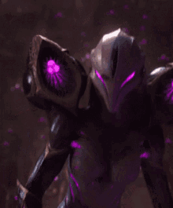
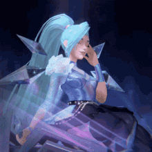
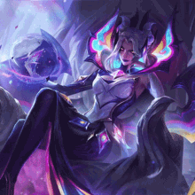

Kai'Sa, dziewczyna porwana przez Pustkę, kiedy była jeszcze dzieckiem, przetrwała tylko dzięki wytrwałości i sile woli. Jej przeżycia sprawiły, że stała się zabójczą łowczynią, choć dla niektórych jest zwiastunką przyszłości, której nie chcieliby dożyć. Wdawszy się w niestabilną symbiozę z żywym pancerzem z Pustki, w końcu będzie musiała zdecydować, czy wybaczyć śmiertelnikom, którzy nazywają ją potworem, i wspólnie z nimi pokonać nadchodzącą ciemność... czy może po prostu zapomnieć, a wtedy Pustka pożre świat, który się od niej odwrócił.

Seraphine. Seraphine, urodzona w Piltover w zauńskiej rodzinie, słyszy dusze innych — świat śpiewa do niej, a ona mu odpowiada. Choć te dźwięki przytłaczały ją w młodości, teraz czerpie z nich inspirację, zamieniając chaos w symfonię.

Morgana wysysa dusze swoich wrogów, lecząc się, gdy zadaje obrażenia bohaterom, dużym stworom oraz średnim i dużym potworom z dżungli. Morgana wyzwala całą potęgę swoich astralnych mocy, rozpościera skrzydła i unosi się nad ziemią. Pęta pobliskich wrogich bohaterów łańcuchami mrocznego bólu, zyskując prędkość ruchu.
Evelynn. W mrocznych zakątkach Runeterry demoniczna Evelynn poszukuje następnej ofiary. Wabi ją, przyjmując ludzką, ponętną postać kobiety, a gdy ta ulegnie jej wdziękom, pokazuje swoje prawdziwe ja. Następnie poddaje ją niewyobrażalnym mękom, zaspokajając się jej bólem.